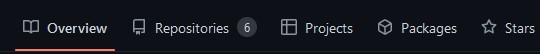

Throughout your development career you will find multiple occasions within which you need to work collaboratively on a project. This could be a personal project that you are working on with friends, or an assignment that you need to complete for your degree. GitHub provides you with the inbuilt functionality to add collaborators to your repository and allow you to work as a team.
Collaborators are added to a GitHub project using the browser version of the service. Log into your account and navigate to the repository that you wish to work on with other people.
When you have done this, you must then click on the settings tab that is visible at the top of the screen.

This will bring you to your repository settings and will provide you with several tools and options that you can use to make alterations to your repo.
From the menu that appears on the left-hand side select the “collaborators” tab.
This will then redirect you to a new window:
To add a new collaborator to your project, click the “Add People” button. This will open the add a collaborator window, which will allow you to add a new collaborator to your repository using either their username, full name, or e-mail address.
Enter the username or email address (these are usually the most precise) of the person that you wish to add to your project.
When you have found the person that you wish to add to your project click on them, this will result in the “Select a collaborator above” button changing to represent the person you wish to add.
If added correctly, the person you wish to add to your repository will receive an e-mail inviting them to join. And your UI will refresh to show that their request is pending.
Once the request has been accepted by the recipient, they will then be given access to the project and be able to collaborate as needed.
When working collaboratively in GitHub the issues tab is a very useful tool that can be used to report bugs found during testing (as well as things like feature requests or changes that could be used to make a program better)
To create an issue in GitHub you must be using the browser version of the software. Navigate to your repository and choose the “issues” tab that is visible at the top of the screen.
Click on this and you will be redirected to the Issues window, which allows you to add and manage the issues currently within your project.
To add a new issue, click the “New Issue” ( ) button on the right hand side of the screen which will take you to the issue wizard.
Within the issue wizard write the nature of the issue and a short description about it that can help the other members of your team when attempting to solve it.
When you are happy with the issue you have created click the “submit new issue” button to add it to the current issues list, Issues can be commented on to provide updates, suggests potential fixes and to request more information as needed. This can be done by clicking on an issue within the issues window and writing in the comment box.
When you are happy with your comment you can post it by pressing the “Comment” button which will add it to the current issue table.
If you have solved the issue and wish to mark it as closed, press the “Close With Comment” button which will remove the issue from the list and add it to your closed issues.
To view your closed issues, select the closed button at the top of the issues window.
If issues have been closed correctly, they will be displayed as they are below.
Projects are a tool from within GitHub that you can use to project manage tasks effectively that you need to complete.
From your overview page on GitHub select the projects tab from the sub menu at the top.
This will take you to the projects overview window, which will look like the one below:
To create a new project, click the “New project” button, this will take you to the project creation wizard which will look like the image below.
Give your project a name (one related to the repository that it is going to be attached to) and for the purpose of this example we are going to use the “Board” button to create a Kanban board.
A Kanban board is a project management tool that can be used to visualize the work tasks needed to be currently completed within a project. Popular project management tools such as Trello use Kanban boards as their project management structure.
Kanban boards consist of a large bank of tasks that need to be completed for a project to be considered complete. Each member of a team (or an individual) takes a task from the bank when they are working on it which moves it into an “in progress” state and then finally to a “completed” state when a task is done, with another task being taken from the bank. There is no limit to how many states a project can be in, but common ones within a Kanban board include the task bank, in progress, completed and on hold.
When you have named your project, and selected the board option press the “create” button to create the project, and the board.
When complete you should be greeted with a screen that looks like this one:
With GitHub naming the states Todo, In Progress and Done.
To add an item to the board, scroll down to the bottom of the screen and select the “add item” button (or you can use the shortcut ctrl and space).
This will open a small window that allows you to name your task. Write the name of your task and press enter, or the plus sign to the left of the new item window.
When you have added the task, you will see it appear at the top of the column, as shown below:
To move the task from Todo to another section of the board hover your mouse over it until the hand gesture appears and left click and hold to begin dragging the task. Move the task to the section you wish for it to be in and release it to move it to the correct location.
From within the GitHub project, you can also make your tasks into issues, automatically attaching them to a project.
To do this hover over the task within the Kanban board and click on the three dots ( ), that appear next to it. This will open the menu below.
Click the convert to issue button to make this into an issue that can be attached to a project. This will bring up a list of your repositories that the issue can be attached to. Click on the one that you wish to use.
Your task will update to show that it is now an issue that is attached to a repository by displaying a green circle and the name of the repo that it is attached to.
To check this in the repository itself, navigate to the repo and look at the issues as you would normally. You will see that it is visible from within the GUI.
You can also attach a project directly to a repository if you wish. To do this press the projects icon from within the repository.
Your screen should be the same as below:
Click the link a project button and select the project you created earlier to link it to the repo. This will then make it visible when viewing the repository.
Now you have all the skills needed to setup, access and use a GitHub repository effectively it is time to put them into use to create a GitHub repository for your group project.
Your created repository should make use of all the skills covered in these two labs, including the effective use of branches, merging and the project management tools.
By the end of this lab, you should have a repository with each member of the group added as collaborators.
You should also have a Kanban board attached to your repository that is populated with tasks for you to complete throughout your project.
Any work that has been completed on your assignment so far should be committed to the newly created repository.
This repository should then be used throughout the creation of your assignment and will form part of your submission when the project is complete.